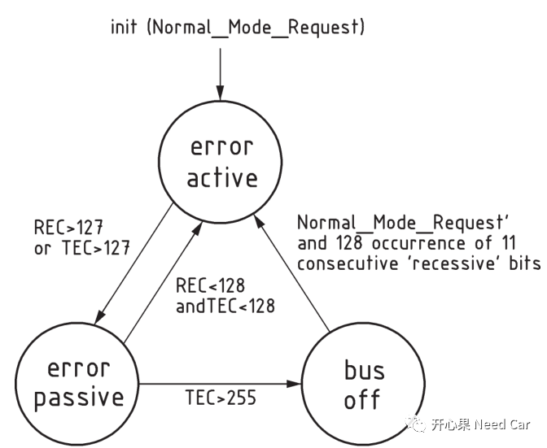
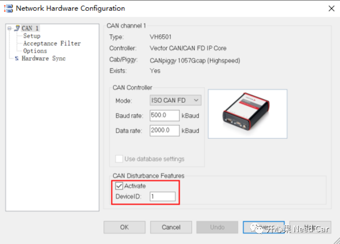
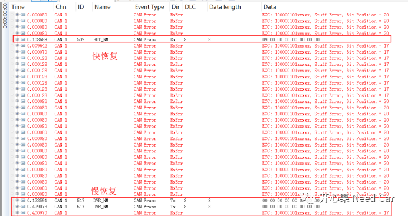

开心果 Need Car · 2021-10-09T22:02:00+08:00 · 微信原文
前言

如果无法正常测试，检查是否需要添加120Ω终端电阻
VH6501如果没有绑定CANoe license，需要同时连接其它含有CANoe license的硬件接口卡
使用VH6501进行干扰时，需要打开干扰功能选项

测试原理
本例假设ECU的快恢复期是100ms,进行5次快恢复，之后进入1s的慢恢复期。
首先ECU启动，唤醒网络（如果有网络管理），使得ECU正常收发报文，选中一个ECU外发报文作为干扰报文，本例：0x100。
正常情况下，0x100发送的报文每个Bit都正常，使用VH6501干扰以后，0x100干扰的Bit不正常导致发送到总线的报文错误，此时ECU和VH6501均检测到错误报文。
本文不讨论具体干扰Bit，在CAN FD的干扰测试中尽量使用固定的Bit测试（如：IDE），而不需要测试仲裁段（显隐性是仲裁结果，不是Bit Error）、ACK应答Bit(接收节点置位显性)、速率切换Bit（测试稳定性不高）。
对于ECU来说，每次发送错误，TEC加8，32个错误帧以后（32*8=256，TEC计数器超过255），ECU进入Busoff，脱离总线，先进行100ms的快恢复（尝试5次），之后是1000ms的慢恢复。

如上图，快恢复与慢恢复期间，ECU重新连接总线，可以接收总线报文。如果此时ECU外发的报文依然错误（32帧错误帧），TEC 再次大于255时，ECU再次Busoff，进入Busoff则停止报文的收发。